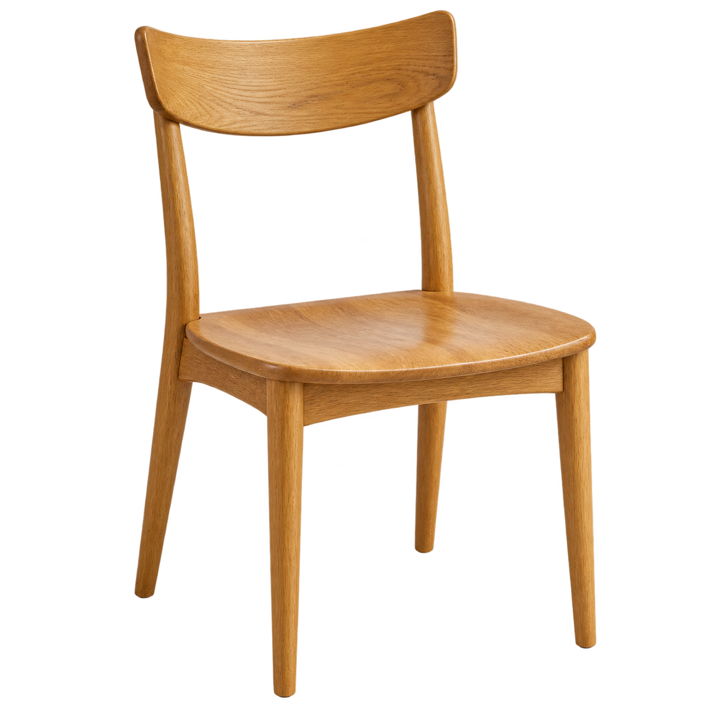
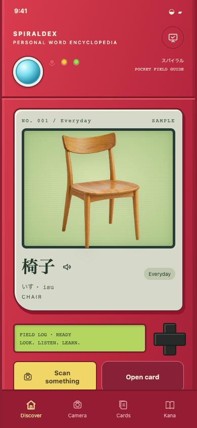
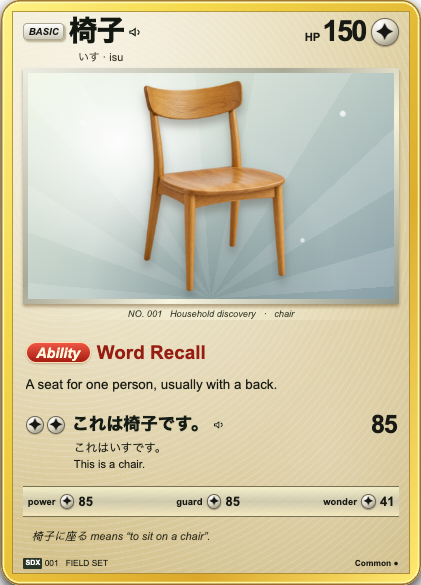
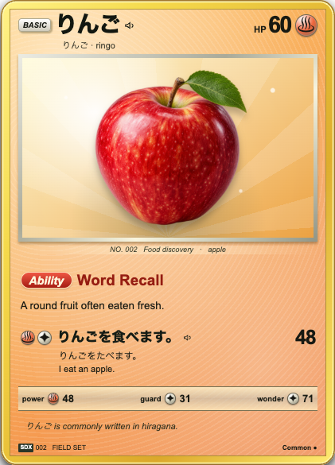
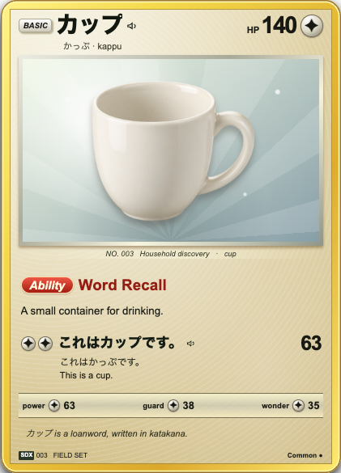

01 / PICK YOUR SUBJECT01 Find a little thing.
Take a photo or choose one from your library. Center one subject and the scan begins automatically.
A POCKET FIELD GUIDE TO JAPANESE
That chair. Your morning cup. An apple on the counter.
Turn the things around you into words you remember.
Android + your Mac · v0.3.2 preview · Open source
Photograph it. Hear its name. Keep its card.

THE DISCOVERY RITUAL
A camera on your phone.
A word lab on your Mac.

01 / PICK YOUR SUBJECTTake a photo or choose one from your library. Center one subject and the scan begins automatically.
Apple Vision removes the background. A local vision model identifies the object and drafts its word card.
A completed card unlocks and joins your archive. Inspect its notes, hear its Japanese name, and revisit it to practice recall.
Illustrated sample flow. Live recognition runs on your paired Mac; model results need your review.
PICK IT UP. PRESS A BUTTON.
The red shell. The blue lens. The joy of discovering something new. Explore the real interface right here.
The camera button plays a prepared discovery. No uploads or model calls. Demo cards stay in this browser. Audio needs a Japanese device voice.
Compare the actual CSS card finishes ↗
Watch the recorded walkthrough ↗
Touch, click, or use your keyboard to explore.
ORDINARY THINGS. PERSONAL TREASURES.
Japanese spelling, hiragana readings,
short examples, and a little everyday wonder.



Three example discoveries. The model assesses rarity and chooses the finish. HP and field ratings are collectible game stats.
START WITH A SOUND
Explore 46 basic hiragana and 46 basic katakana. Tap a character, hear its sound, and see an example. Then practice the words you’ve collected.
Explore the sound library ↗A SMALL APP. YOUR OWN MODELS.
Photos travel over a paired HTTPS connection to your Mac. Background removal and model inference run there. Saved cards live on your phone.
No cloud model API or subscription is required. The Mac must be awake for new scans. Downloading models and installing dependencies needs internet access.
READY FOR YOUR FIRST DISCOVERY?
Android 9+ · macOS 14+ · Ollama + Gemma 3 · Early preview
This preview includes a signed Android APK, a Mac host bundle, photo capture, background removal, local word-card generation, pronunciation, kana, saved cards, and simple recall practice. Recognition can be wrong; review every generated card. iOS, cloud sync, spaced repetition, voiced/combined kana, and an offline scan queue are not included yet.